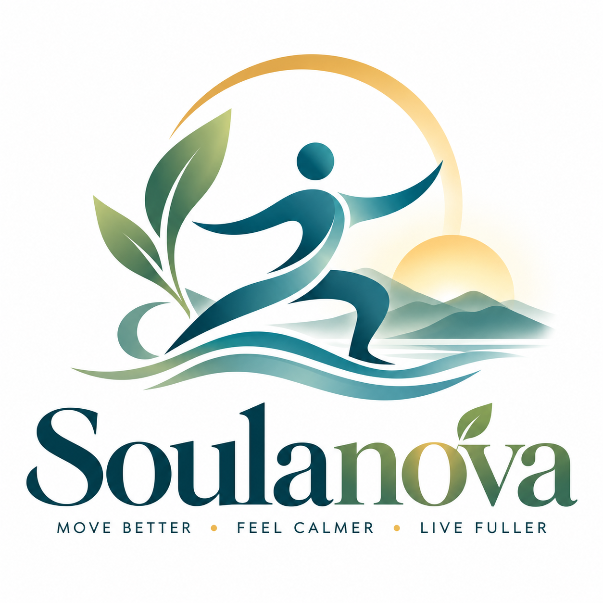

01 / MINDFUL MOVEMENT
Tai Chi
Flowing sequences to explore balance, coordination, and calm.
Gentle • GroundingA NEW WAY TO FEEL YOUR BEST
Mindful movement, everyday strength, and Mediterranean-inspired nourishment—together in one welcoming wellness experience.
✧ Thoughtfully designed for real life, at your pace.

Build mobility, confidence and strength.
Create space for breath and balance.
Explore delicious, balanced food habits.
MOVEMENT FOR EVERY SEASON
Whether you're just beginning or building on an existing practice, Soulanova is being designed to help you move with intention.
Flowing sequences to explore balance, coordination, and calm.
Gentle • GroundingThoughtful poses, steady breathing, and space to unwind.
Flexible • RestorativeControlled movement for posture, stability, and core awareness.
Focused • BalancedApproachable training to support your everyday activities.
Strong • ConfidentMove more comfortably with guided stretching and joint-friendly routines.
Easy • RestorativeEnjoy accessible, uplifting movement without high-impact jumps.
Energizing • AccessibleNOURISH YOUR EVERYDAY
Our planned Mediterranean-inspired nutrition experience celebrates colorful vegetables, fruit, whole grains, beans, olive oil, nuts, herbs, and satisfying meals shared with the people you love.
Explore the food guide ↗Fresh ingredients. Simple pleasures.
01 / HOW IT WORKS
Mediterranean-style eating focuses on overall habits rather than rigid rules. Fill your meals with plants, use olive oil, and enjoy a variety of nourishing foods.
Vegetables, fruit, beans, lentils, nuts and whole grains are everyday staples.
Use extra-virgin olive oil and enjoy nuts and seeds.
Enjoy fish regularly, alongside beans and other protein choices.
Cook when you can and share satisfying meals with others.
02 / FOODS TO ENJOY
Think of the Mediterranean diet as a flexible pattern, not a list of forbidden foods.
03 / MEAL IDEAS
Original meal inspiration for everyday life. These examples are not personalized nutrition plans.
Warm oats with seasonal berries, walnuts and cinnamon.
Chickpeas, farro, tomatoes, cucumber, herbs and olive oil.
With roasted vegetables and brown rice.
Serve with sliced peppers, cucumber and carrots.
Simple, convenient and satisfying.
Beans, spinach, tomatoes and fresh herbs.
04 / HEALTHY HABITS
Mediterranean-inspired living can include regular movement, cooking at home and enjoying meals together.
Enjoy Tai Chi, walking or another activity that suits you.
Keep versatile staples ready for easy meals.
Enjoy food and conversation with family or friends.
Adapt choices for allergies, preferences and health needs.
Inspired by the Cleveland Clinic Mediterranean Diet guide ↗. Soulanova is not affiliated with or endorsed by Cleveland Clinic. This general information is not medical advice; consult a registered dietitian or healthcare professional for individual guidance.
Movement, rest, nourishment, and a little more joy—one day at a time.
THE NEXT CHAPTER
We're developing Soulanova for iPhone and Android, with guided movement and Mediterranean-inspired wellness content. Workouts, accounts, and subscriptions are not available yet.